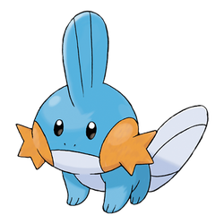

Kort forklart: Det gjør vi ikke.
All din informasjon om nivå, pokemon du har fanget, mynter, osv. er lagret på din enhet, i nettleseren din.
Vi har ikke tilgang til din lagrede data, og vi har ikke mulighet til å endre din lagrede data.
Noen mulige årsaker til at dataen din forsvinner er:
- Du spiller i et inkognito-vindu på nettleseren. (Da blir ikke ting lagret)
- Skolen / Kommunen din har spesielle regler, som gjør at nettsiden ikke kan lagre data.
- Du har ikke godtatt cookies.
- Du har et program som sletter cookies og/eller nettleserdata
- Du spiller på en annen enhet enn du gjorde fra før.
En ting du kan gjøre, om du opplever at du hele tiden mister alt du har, er å ta i bruk den nye lagre og last opp funksjonen.
Foreløbig kan vi ikke det.
Vi er like glad i nye funksjoner som det dere er, men trading og battles vil kreve at vi kobler sammen to enheter på en eller annen måte. Dette krever servere som kan behandle den informasjonen, og i tillegg vil det gi oss nye GDPR utfordringer.
PokeMath tjener ikke penger, med unntak av donasjoner fra lærere og foreldre som setter pris på arbeidet.
Faktisk så taper vi penger på å ha siden oppe, men det er heldigvis ikke mye.
Vi betaler ca. 200kr i måneden for å holde siden oppe.
Ettersom vi ikke vil ha reklame på nettsiden, og nettsiden ikke koster penger å ta i bruk, så tjener vi ingenting på nettsiden.
Hvis du er uheldig og har slettet alle dine pokemon, så er det dessverre ingenting vi kan gjøre.
All brukerdata er lagret på din egen enhet, og blir ikke sendt inn til oss. På denne måten unngår vi store GDPR problemer.
Det eneste håpet du har, er om du har en gammel nedlastet lagringsfil fra lagre og last opp funksjonen.
Det kan hende at nettleseren "husker" en gammel versjon av nettsiden, og for å spare data, så bruker nettleseren den versjonen, istedet for å laste inn den nye.
På PC kan man tvinge nettleseren til å laste inn ny informasjon, ved å holde nede CTRL knappen og trykke F5. (Refresh).
På Mac kan man gjøre det samme med Command og F5.
På iPad eller mobil kan du prøve å lukke nettleseren helt (kast den ut), starte enheten på nytt, og så prøve å laste inn siden på nytt. Det er ikke alltid det fungerer.
Man kan også prøve å koble fra alt av internett (sett enheten i flymodus) -> Prøv å koble til pokemath. (Det vil ikke fungere, men nettsiden laster da inn ny informasjon) -> så koble til internett (skru av flymodus) og prøv å koble til på nytt.
Dette skjer om man bruker en QR-Kode app som har en egen nettleser.
Ofte så lar disse appene deg kopiere en lenke istedet for å gå til siden. Om du kopierer lenken, og bruker den i nettleseren du vanligvis bruker, så vil du ha alle pokemonene dine.
Det fungerer også ofte å bare bruke den vanlige kamera-appen på enheten for å scanne QR-Koden. Disse vil ofte åpne lenkene i den nettleseren du bruker oftest.

Noen av disse er avhengige av datoen på din enhet for å fungere. Akkuratt nå leses den datoen som:
Hvis dette ikke stemmer med riktig dato, så kan det være årsaken. Hvis datoen er riktig, se spørsmålet ovenfor om "Vennene mine har funksjoner som ikke jeg har."
Ta kontakt med oss! Bruk siden Kontakt oss!